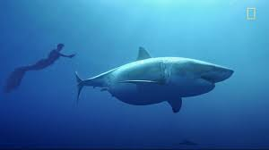
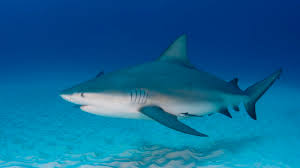
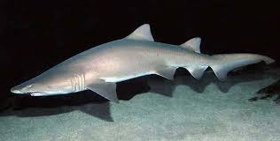
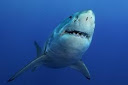
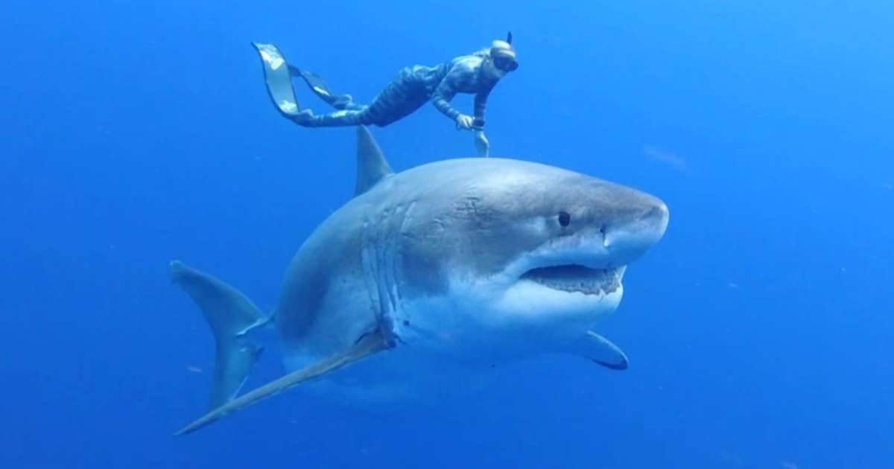
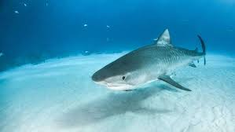

Sharks
By Kalyan

Sharks are a group of elasmobranch fish characterized by a cartilaginous skeleton, five to seven gill slits on the sides of the head, and pectoral fins that are not fused to the head. Modern sharks are classified within the clade Selachimorpha (or Selachii) and are the sister group to the rays. However, the term "shark" has also been used for extinct members of the subclass Elasmobranchii outside the Selachimorpha, such as Cladoselache and Xenacanthus, as well as other Chondrichthyes such as the holocephalid eugenedontidans.

Under this broader definition, the earliest known sharks date back to more than 420 million years ago.[2] Acanthodians are often referred to as "spiny sharks"; though they are not part of Chondrichthyes proper, they are a paraphyletic assemblage leading to cartilaginous fish as a whole. Since then, sharks have diversified into over 500 species. They range in size from the small dwarf lanternshark (Etmopterus perryi), a deep sea species of only 17 centimetres (6.7 in) in length, to the whale shark (Rhincodon typus), the largest fish in the world, which reaches approximately 12 metres (40 ft) in length.[3] Sharks are found in all seas and are common to depths of 2,000 metres (6,600 ft). They generally do not live in freshwater although there are a few known exceptions, such as the bull shark and the river shark, which can be found in both seawater and freshwater.[4] Sharks have a covering of dermal denticles that protects their skin from damage and parasites in addition to improving their fluid dynamics. They have numerous sets of replaceable teeth.[5]

Well-known species such as the tiger shark, blue shark, mako shark, thresher shark, and hammerhead shark are apex predators—organisms at the top of their underwater food chain. Many shark populations are threatened by human activities. Biofluorescence is a characteristic of a few shark species, such as the swell shark and the chain catshark.
The Great White Shark
The great white shark (Carcharodon carcharias), also known as the great white, white shark or white pointer, is a species of large mackerel shark which can be found in the coastal surface waters of all the major oceans. The great white shark is notable for its size, with larger female individuals growing to 6.1 m (20 ft) in length and 1,905 kg (4,200 lb) in weight at maturity.[3][4][5] However, most are smaller; males measure 3.4 to 4.0 m (11 to 13 ft), and females measure 4.6 to 4.9 m (15 to 16 ft) on average.

[5][6] According to a 2014 study, the lifespan of great white sharks is estimated to be as long as 70 years or more, well above previous estimates,[7] making it one of the longest lived cartilaginous fish currently known.[8] According to the same study, male great white sharks take 26 years to reach sexual maturity, while the females take 33 years to be ready to produce offspring.[9] Great white sharks can swim at speeds of over 56 km/h (35 mph),[10] and can swim to depths of 1,200 m (3,900 ft).[11]

The great white shark has no known natural predators other than, on very rare occasions, the killer whale.[12] The great white shark is arguably the world's largest known extant macropredatory fish, and is one of the primary predators of marine mammals. It is also known to prey upon a variety of other marine animals, including fish and seabirds. It is the only known surviving species of its genus Carcharodon, and is responsible for more recorded human bite incidents than any other shark.
The species faces numerous ecological challenges which has resulted in international protection. The IUCN lists the great white shark as a vulnerable species,[2] and it is included in Appendix II of CITES.[15] It is also protected by several national governments such as Australia (as of 2018).[16]
The novel Jaws by Peter Benchley and its subsequent film adaptation by Steven Spielberg depicted the great white shark as a "ferocious man eater". Humans are not the preferred prey of the great white shark,[17] but the great white is nevertheless responsible for the largest number of reported and identified fatal unprovoked shark attacks on humans.[18]
Contents
1 Taxonomy
Tiger Shark
The tiger shark (Galeocerdo cuvier[3]) is a species of requiem shark and the only extant member of the genus Galeocerdo. It is a large macropredator, capable of attaining a length over 5 m (16 ft 5 in).[4] Populations are found in many tropical and temperate waters, especially around central Pacific islands. Its name derives from the dark stripes down its body, which resemble a tiger's pattern, but fade as the shark matures.[5]

The tiger shark is a solitary, mostly nocturnal hunter. It is notable for having the widest food spectrum of all sharks, with a range of prey that includes crustaceans, fish, seals, birds, squid, turtles, sea snakes, dolphins, and even other smaller sharks. It also has a reputation as a "garbage eater",[5] consuming a variety of inedible, man-made objects that linger in its stomach. Though apex predators, tiger sharks are sometimes taken by groups of killer whales.[6] It is considered a near threatened species due to finning and fishing by humans.
The tiger shark is second only to the great white in recorded fatal attacks on humans.
Bull Shark
The bull shark (Carcharhinus leucas), also known as the Zambezi shark (informally "zambi") in Africa, and Lake Nicaragua shark in Nicaragua, is a requiem shark commonly found worldwide in warm, shallow waters along coasts and in rivers. The bull shark is known for its aggressive nature, and presence in warm, shallow brackish and freshwater systems including estuaries and rivers.

Unlike the river sharks of the genus Glyphis, bull sharks are not true freshwater sharks, despite their ability to survive in freshwater habitats.